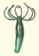
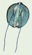
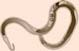
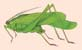

30 Introducción a la diversidad animal
626
CONCEPTOS CLAVE
30.1 Aunque son un grupo diverso, los animales comparten muchas características. Son heterótrofos eucariotas multicelulares compuestos de células especializadas para realizar funciones específi cas. La mayoría de los animales son organismos diploides que se reproducen sexualmente, y la mayoría tiene sistemas nervioso y muscular. 30.2 Los animales evolucionaron en ambientes marinos, y los miembros de la mayoría de los fi los animales todavía habitan ambientes marinos. Sin embargo, muchos animales están adaptados a la vida en agua dulce y otros a hábitats terrestres. 30.3 Los ancestros comunes de los animales son coanofl agelados; coanofl agelados, hongos y animales son un grupo monofi lético conocido como opistocontos. 30.4 Los biólogos clasifi can los animales con base en muchas características, incluidos su morfología, características de su desarrollo temprano y datos moleculares; por lo general están de acuerdo en que los animales bilaterales se dividen en al menos tres grandes clados.
A
unque los miembros de la mayoría de especies animales se reconocen fácilmente como animales, la identidad de algunos otros es menos obvia. Los primeros naturalistas consideraban que las esponjas eran plantas porque no se mueven de un lugar a otro. Algunas personas todavía confunden ciertos animales marinos, como las esponjas y los corales, con plantas (vea fotografía). La locomoción no es un requisito para ser clasifi cado como animal. La fi logenia animal es un excitante y rápidamente cambiante campo de estudio. Los biólogos han descrito y nombrado a más de 1.5 millones de especies de animales, y cada año se nombran de 15,000 a 20,000 nuevas especies. Quizás millones más permanecen sin descubrir y clasifi car. De modo interesante, un estimado de 99% de todas las especies animales que habitaron alguna vez el planeta están extintas. Los taxonomistas asignan los animales existentes (vivos) a alrededor de 35 fi los. Estudios moleculares confi rman que muchos de estos grupos son monofi léticos , esto es: consisten en todos los descendientes y sólo los descendientes de un ancestro común. (Recuerde del capítulo 23 que un grupo monofi lético se llama
Esponja de tubo ( Callyspongia vaginalis ). Este animal, en ocasiones confundido con una planta, varía en color de púrpura a azul a gris. Es común en arrecifes de coral en el Caribe, desde Florida hasta México.
Charles V. Angelo/Photo Researchers, Inc.
Introducción a la diversidad animal 627
- La mayoría de los animales tienen sistemas nerviosos y sistemas musculares que les permiten responder rápidamente a los estímulos en su ambiente. 7. La mayoría de los animales son organismos diploides que se reproducen sexualmente, con grandes óvulos no mótiles y pequeños espermatozoides fl agelados. Un espermatozoide haploide se une con un óvulo haploide, y forma un cigoto diploide (óvulo fecundado). 8. Los animales pasan a través de un período de desarrollo embrionario. El cigoto experimenta división celular mediante mitosis. Durante la división celular el cigoto se transforma hasta ser un balón hueco de células llamado blástula . Aunque algunos animales se desarrollan directamente en adultos, la mayoría primero se transforma en larva , una forma sexualmente inmadura que puede parecer muy diferente del adulto ( FIGURA 30-1 ). La larva difi ere del adulto en muchas formas, incluyendo dónde vive (su hábitat), cómo se mueve y qué come. Las larvas usualmente pasan por metamorfosis , un proceso de crecimiento que convierte al animal inmaduro en una forma juvenil que luego puede crecer hasta ser adulta.
Repaso
■ Durante siglos, los científi cos clasifi caron las esponjas como plantas, pero ahora se ordenan como animales. ¿Qué criterios usan los biólogos para clasifi carlas como animales?
30.2 ADAPTACIONES AL OCÉANO, AL AGUA DULCE Y A LOS HÁBITATS TERRESTRES
OBJETIVO DE APRENDIZAJE
2 Comparar las ventajas y desventajas de la vida en el océano, el agua dulce y la tierra.
La evidencia fósil sugiere que los animales evolucionaron en entornos marinos poco profundos durante el eón Proterozoico, al menos hace 600 millones de años (ma; vea el capítulo 21). Aunque los animales ahora se distribuyen en casi todo los ambientes terrestres, al menos algunos miembros de la mayoría de los fi los animales todavía habitan en lugares marinos.
Los hábitats marinos ofrecen muchas ventajas
La fl otabilidad del agua de mar brinda soporte, y su gran volumen mantiene la temperatura del agua relativamente estable. Los fl uidos corporales de la mayoría de los invertebrados tienen aproximadamente la misma concentración osmótica que el agua de mar, de modo que el equilibrio entre fl uidos y sal se mantiene con más facilidad que en el agua dulce. El plancton , que consiste principalmente en animales y protistas microscópicos suspendidos en agua y que fl otan con su movimiento, brinda una fuente de alimento lista para muchos animales acuáticos. La vida en el océano también presenta algunos retos. Aunque el movimiento continuo del agua lleva nutrientes a los animales y lava sus desechos, los animales deben lidiar con los movimientos del agua y las corrientes que podrían arrastrarlos. Calamares, peces y mamíferos marinos evolucionaron como fuertes nadadores, por lo general capaces de dirigir sus movimientos y mantener su posición. Sin embargo, la mayoría de los invertebrados y vertebrados jóvenes no pueden nadar vigo-
clado ). Los grupos animales que no son monofi léticos se dividieron o reorganizaron, y algunos miembros de los grupos se reasignan a otros taxones. Es importante recordar que la clasifi cación de los animales y las posiciones relativas de los grupos animales son un trabajo en progreso. Conforme se consideran nuevos datos, los sistemáticos vuelven a dibujar el árbol de la vida animal. En este capítulo se estudian las características de los animales y sus hábitats. Luego se exploran los orígenes animales y algunos de los criterios que usan los biólogos para determinar las relaciones evolutivas y clasifi car los animales. En el capítulo 31 se describirán tres fi los tradicionalmente considerados como divergentes tempranos en la historia evolutiva de los animales. Luego se estudiará uno de los grandes clados de animales: los protóstomos. (En el capítulo 32 se enfocará en los deuteróstomos, que incluyen equinodermos y cordados, los clados a los que pertenecen los humanos). En estos capítulos se presentan muchas hipótesis, y se discutirán muchos ejemplos de cómo los sistemáticos revisan las relaciones de las ramas del árbol fi logenético animal en respuesta a nuevos datos.
30.1 CARACTERÍSTICAS ANIMALES
OBJETIVO DE APRENDIZAJE
1 Describir varias características comunes a la mayoría de los animales.
Los animales son tan diversos que para casi cualquier defi nición es posible encontrar excepciones. Es mejor describir a los animales por las características que comparten:
- Los animales son eucariotas multicelulares. En contraste con plantas, algas y hongos, sus células carecen de paredes celulares. En vez de ello, el apoyo estructural depende de colágeno y de otras proteínas estructurales. El colágeno es un importante carácter derivado compartido en los animales (vea el capítulo 23). 2. Los animales son heterótrofos . Como consumidores dependen de los productores para sus materiales brutos y energía. En contraste con los hongos, la mayoría de los animales ingiere primero su alimento y luego lo digieren dentro de su cuerpo, por lo general dentro de un sistema digestivo. 3. Las células que constituyen el cuerpo animal son especializadas para realizar funciones específi cas. En todos los animales, excepto en los más simples, las células están organizadas para formar tejidos, y los tejidos se organizan para formar órganos. En los animales pequeños con planes corporales simples, los procesos vitales como el intercambio de gases, la circulación de materiales y la eliminación de desechos tienen lugar mediante difusión de gases y otras sustancias directamente hacia y desde el ambiente. Sistemas orgánicos especializados realizan estas funciones en los animales grandes. 4. Los animales tienen diversos planes corporales. El término plan corporal se refi ere a la estructura y diseño funcionales básicos del cuerpo. Y el plan corporal y estilo de vida del animal están adaptados a sus métodos de obtención de alimento y reproducción. 5. La mayoría de los animales son capaces de locomoción en algún momento durante su ciclo de vida. Algunos animales (como esponjas y corales) se mueven como las larvas (formas inmaduras) pero son sésiles (se adhieren fi rmemente al suelo o alguna otra superfi cie) como adultos (vea la fotografía de apertura del capítulo).
628 Capítulo 30
parecidos a escorpiones que llegaron a tierra en el período Silúrico, hace aproximadamente 444 ma. Los primeros vertebrados que habitaron ambientes terrestres, los anfi bios, no aparecieron sino hasta el período Devónico, más o menos 30 millones de años después. El principal problema que enfrentan todos los organismos terrestres es la desecación. El agua se pierde constantemente por evaporación y con frecuencia es difícil de reemplazar. Una cubierta corporal adaptada para minimizar la pérdida de fl uidos ayuda a resolver este problema en muchos animales terrestres ( FIGURA 30-2 ). La ubicación de la superfi cie respiratoria dentro del animal también ayuda a evitar la pérdida de fl uidos. Por ende, las branquias de los animales acuáticos usualmente se ubican en el exterior, pero los pulmones y tubos endotraqueales de los animales terrestres por lo general se encuentran dentro del cuerpo. La reproducción en tierra también plantea retos para proteger de la deshidratación los gametos y la descendencia en desarrollo. Los animales acuáticos usualmente liberan sus gametos en el agua, donde ocurre la fecundación. El agua circundante también funciona como un efectivo amortiguador que protege los delicados embriones conforme crecen. Algunos animales terrestres, incluidos la mayoría de los anfi bios, regresan al agua para la reproducción y sus formas larvarias se desarrollan en el agua. La evolución de fecundación interna permitió a muchos animales terrestres, incluidos lombrices, caracoles terrestres, insectos, reptiles, aves y mamíferos, a enfrentar el reto de la deshidratación. Puesto que estos animales terrestres transfi eren espermatozoides del cuerpo del macho directamente hacia el cuerpo de la hembra mediante copulación, un medio acuoso continuamente rodea al espermatozoide. Otra importante adaptación para la reproducción sobre tierra es el duro cascarón protector que rodea los huevos de muchas especies (vea la fi gura 30-2). Secretado por la hembra, el cascarón evita que el embrión en desarrollo se deshidrate. Una adaptación alternativa para la reproduc-
rosamente, y se tuvieron que adaptar de varias maneras a las mareas y corrientes. Algunos animales sésiles se adhieren permanentemente a una estructura estable, como una roca. Otros se esconden en la arena y el cieno que cubre el fondo del mar. Muchos invertebrados se adaptaron al mantener un pequeño tamaño corporal y volverse parte del plancton. Mientras se lanzan por ahí, su fuente de alimento sigue rodeándolos.
Algunos animales están adaptados a hábitats de agua dulce
Muchos menos tipos de animales viven en agua dulce que en el océano, porque vivir en este hábitat es más difícil. El agua dulce es hipotónica para los fl uidos de tejido de los animales, de modo que el agua tiende a entrar al animal mediante ósmosis. Para sobrevivir en este hábitat, las especies de agua dulce deben tener mecanismos para remover el exceso de agua mientras conservan las sales. Esta osmorregulación requiere un gasto de energía. El agua dulce ofrece un ambiente mucho menos constante que el agua de mar. Los animales que habitan agua dulce deben tener adaptaciones para sobrevivir a variaciones en el contenido de oxígeno, temperatura, turbiedad (debido a sedimentos suspendidos en el agua) e incluso al volumen del agua. Además, el agua dulce por lo general contiene menos alimento que el mar.
La vida en tierra requiere más adaptaciones
Vivir en tierra es incluso más difícil que vivir en agua dulce, y la evolución de los animales terrestres involucró grandes adaptaciones. Al analizar el registro fósil, muchos biólogos plantean la hipótesis de que los primeros animales terrestres que respiraron aire fueron artrópodos
- Larva de langosta. Esta larva da un paseo sobre una medusa. Durante un período de meses, la larva pasa a través de varias etapas antes de convertirse en adulto. Fotografiada en mar abierto durante la noche, Hawai.
Doug Perrine/SeaPics.com
- Langosta adulta. El adulto tiene dos largas antenas usadas para percibir movimientos. Las langostas carecen de tenazas grandes. Las espinas de su espalda le ayudan a protegerse. En esta imagen se pueden ver las dos grandes espinas sobre los ojos del animal. Las langostas salen de sus escondites durante la noche, para cazar.
Dr. Magnus Kjaergaard
FIGURA 30-1 Langostas ( Panulirus sp.) larva y adulta La mayoría de los animales pasan por una etapa de larva antes de desarrollarse en adulto. Generalmente la larva difi ere del adulto en tamaño, apariencia y estilo de vida.
Introducción a la diversidad animal 629
molecu lar , la ciencia que se enfoca en la estructura molecular para clarifi car relaciones evolutivas, proporcionó datos adicionales que son cruciales para responder preguntas acerca de fi logenia. En muchos casos, los datos moleculares confi rmaron las hipótesis que se basaban en morfología. Los genomas complejos aparentemente estuvieron presentes temprano durante la evolución animal. Estudios moleculares sugieren que el ancestro de los animales tenía más de 1500 genes que no se encuentran en otros eucariotas. Algunos de estos genes pueden rastrearse mediante transferencia horizontal de genes desde otros dominios, seguida por modifi cación de los genes. Genomas complejos se han descrito en la anémona de mar y en otros animales que tienen morfología relativamente simple. Análisis moleculares indican que la estructura de los genes que controlan el desarrollo, moléculas de ARN, y muchas otras moléculas son muy similares entre todos los grupos de animales estudiados. De acuerdo con el principio de parsimonia , es improbable que dichas moléculas complejas hayan evolucionado varias veces (vea el capítulo 23). Por ende, estos datos apoyan la hipótesis de que los animales evolucionaron sólo una vez. Los animales son un grupo monofi lético.
La sistemática molecular ayuda a los biólogos a interpretar el registro fósil
La historia evolutiva de los animales se ha debatido vigorosamente, porque los primeros animales tenían formas corporales blandas que dejaron pocos fósiles. La escasez de fósiles difi culta determinar la edad, tasa de divergencia y número de ramas de los grupos animales. En 2009, un equipo de investigación descubrió trazas fósiles en un campo de petróleo de la península arábiga que se considera se remontan a más de 635 millones de años. Las trazas fósiles son esteroides que se encuentran sólo en las estructuras esqueléticas de ciertas esponjas (demosponjas). Antes de este descubrimiento, los fósiles animales más antiguos conocidos eran biota ediacárica del período Ediacárico (desde hace 600 ma a 542 ma). Estos fósiles de pequeños animales simples sugieren que esponjas, medusas y ctenóforos estuvieron presentes durante este período (vea la fi gura 21-9). Paleontólogos descubrieron muchos fósiles de grandes animales complejos en Chengjian, un sitio fósil de China del Cámbrico temprano (542 ma a 520 ma), y en Burgess Shale en la Columbia Británica, un sitio fósil del Cámbrico medio (520 ma a 515 ma). Fósiles de la mayoría de los fi los existentes (y también de muchos animales extintos) se han encontrado en estos sitios. La rápida aparición de una sorprendente variedad de planes corporales durante esta época se conoce como radiación cámbrica , o de manera menos formal como explosión cámbrica (vea la fi gura 21-10). De acuerdo con la hipótesis de la radiación cámbrica, que se basa en el registro fósil, las grandes modifi caciones en plan corporal que ocurrieron durante esta época explican muchas ramas del árbol animal. Estudios de grandes conjuntos de datos moleculares sugieren que la mayoría de los clados animales en realidad divergieron durante un período muy largo, en el eón Proterozoico (2.5 mma a 542 ma). En consecuencia, los fi los animales que primero dejaron fósiles durante la radiación cámbrica pudieron evolucionar varios cientos de millones de años antes de que aparecieran en el registro fósil. Los biólogos estiman que ciertos grupos tienen aproximadamente el doble de edad que los fósiles más antiguos encontrados a la fecha. De acuerdo con esta visión, la radiación cámbrica fue una rápida evolución de nuevos planes corporales animales entre clados que ya existían. Acaso los fósiles de estos animales primitivos permanecen sin descubrir en rocas del Proterozoico. Otra hipótesis sostiene que un cambio en condición
ción terrestre es el desarrollo del embrión dentro del cuerpo húmedo de la madre. El agua tiene fl otabilidad que ayuda a sostener los animales que habitan este ambiente. El aire es menos denso que el agua, y para habitar la tierra, los animales deben tener estructuras, como un sistema esquelético y músculos, que sostengan el cuerpo. Los extremos de temperatura de los hábitats terrestres también presentan desafíos. En capítulos posteriores se estudiarán adaptaciones comportamentales y fi siológicas para mantener la temperatura corporal.
Repaso
■ ¿Cuáles son algunas ventajas de los ambientes marinos sobre los hábitats de agua dulce y terrestre?
■ ¿Cuáles son algunas adaptaciones animales al ambiente terrestre?
30.3 EVOLUCIÓN ANIMAL
OBJETIVO DE APRENDIZAJE
3 Usar las hipótesis actuales para rastrear la evolución temprana de los animales.
Los biólogos por lo general están de acuerdo en que los animales comparten un ancestro común con un grupo de protistas conocidos como coanofl agelados (vea la fi gura 26-21). Las células de estos fl agelados coloniales se especializaron para realizar funciones específi cas, como movimiento, alimentación o reproducción. Conforme evolucionó esta división de trabajo, una colonia de fl agelados alcanzó el nivel de cooperación y coordinación que califi có para ser considerada como un solo organismo: el primer animal. Los coanofl agelados, hongos y animales son un grupo monofi lético conocido como opistocontos . Recuerde del capítulo 26 que los opistocontos se caracterizan por un fl agelo posterior sobre células mótiles. Históricamente, los biólogos dependen de los fósiles, de semejanzas en el plan corporal y de patrones de desarrollo para determinar las relaciones evolutivas entre varios grupos de animales. La sistemática
FIGURA 30-2 Adaptaciones a la vida terrestre La gruesa y dura piel de la iguana verde ( Iguana iguana ) tiene escamas y es resistente al agua. Los huevos coriáceos protegen los embriones de la deshidratación.
E. R. Degginger/Photo Researchers, Inc.
630 Capítulo 30
5 Citar ejemplos específi cos de cómo los datos de sistemática molecular confi rman o modifi can la fi logenia animal tradicional. (Incluir la identifi cación de tres clados principales de animales bilaterales).
El plan corporal animal básico se ha conservado enormemente a lo largo de la historia evolutiva de los humanos. Los biólogos usan semejanzas y diferencias en morfología (estructura) y en el desarrollo temprano para inferir relaciones evolutivas entre grupos animales. Las variaciones en características principales del plan corporal proporcionan pistas hacia relaciones animales. Los biólogos comparan variaciones en simetría corporal, número de capas de tejido, tipo de cavidad corporal y patrón de desenvolvimiento. Además de estos métodos tradicionales, los biólogos ahora tienen herramientas moleculares para mejorar la comprensión de la fi logenia animal.
Los animales presentan dos tipos principales de simetría corporal
Simetría se refi ere al arreglo de las estructuras corporales en relación con el eje corporal. La mayoría de las esponjas no son simétricas, de modo que, cuando una esponja se corta a la mitad, las dos mitades no son mutuamente similares. La mayoría de los otros animales presentan simetría corporal o radial o bilateral. Las cnidarias (medusas, anémonas de mar y sus parientes) y los equinodermos adultos (estrellas de mar y sus parientes) tienen simetría radial . En la simetría radial el cuerpo tiene la forma general de una rueda o cilindro, y estructuras similares están regularmente ordenadas como radios desde un eje central ( FIGURA 30-3a ). A través del eje central pueden trazarse múltiples planos, y cada uno divide el organismo en dos imágenes especulares. Un animal con simetría radial recibe estímulos igualmente de todas direcciones en el ambiente. Algunos animales modifi caron la simetría radial. Por ejemplo, las anémonas de mar y los ctenóforos (“medusas de peine”) tienen simetría birradial , en la que partes del cuerpo se especializaron de modo que sólo dos planos pueden dividir el cuerpo en mitades similares. La mayoría de los animales presenta simetría bilateral , al menos en sus etapas larvarias. Un animal con simetría bilateral puede dividirse sólo a lo largo de un plano (que pasa a través de la línea media del cuerpo) para producir mitades derecha e izquierda aproximadamente equivalentes que son imágenes de espejo ( FIGURA 30-3b ). Conforme evolucionó la simetría bilateral, una tendencia evolutiva condujo hacia la cefalización , el desarrollo de una cabeza donde se concentran estructuras sensoriales. En muchos grupos de animales la concentración de células nerviosas en la cabeza forma un cerebro, y un cordón nervioso se extiende desde el cerebro hacia el extremo posterior del animal. Simetría bilateral y cefalización son adaptaciones para la locomoción. El extremo cefálico del animal encuentra primero su ambiente y está mejor equipado para capturar alimento o responder al peligro. Algunas defi niciones de términos y direcciones básicos ayudarán a ubicar las estructuras corporales en los animales con simetría bilateral. La superfi cie de la espalda de un animal es su superfi cie dorsal ; el lado inferior (abdomen) es su superfi cie ventral . Anterior (o cefálico ) signifi ca hacia el extremo de la cabeza del animal; posterior , o caudal , signifi ca hacia el extremo de la cola. Se dice que una estructura es medial si se ubica hacia la línea media del cuerpo y lateral si está hacia un lado del cuerpo; por ejemplo, la oreja humana es lateral a la nariz. En anatomía humana, el término superior se refi ere a una estructura ubicada arriba de algún punto de referencia, o hacia el extremo de la cabeza del cuerpo. El término inferior se usa en anatomía humana para signifi car ubicado abajo de algún punto de referencia, o hacia los pies.
ambiental ocurrido antes de la radiación cámbrica permitió la formación de fósiles.
Los biólogos plantean hipótesis acerca de la evolución del desarrollo
Los cambios en los planes corporales de los animales se vinculan con cambios en los patrones de desenvolvimiento embrionario. Los biólogos han usado desde hace mucho las semejanzas y diferencias en desenvolvimiento embrionario para plantear hipótesis acerca de cómo se relacionan grupos de animales. De manera tradicional, los biólogos dependían básicamente de cambios estructurales para comparar el proceso de evolución en varios grupos. Durante los últimos 20 años, investigadores comenzaron a estudiar la base molecular de los procesos de desarrollo. Identifi caron los genes que dirigen la manifestación temprana del plan corporal y descubrieron que muchos de estos genes se conservaron durante la evolución animal. El mismo conjunto básico de genes controla la manifestación temprana en todos los grupos animales. Más aún, los mismos genes se usan en forma similar para regular el desarrollo. La biología de desarrollo evolutivo, en ocasiones llamada Evo Devo , se ha convertido en un importante enfoque para estudiar relaciones animales. Los biólogos comparan eventos moleculares, como la regulación genética durante el desarrollo, en varios grupos animales. Recuerde del capítulo 17 que los genes Hox son un grupo de genes reguladores que especifi can el eje antero-posterior durante el desarrollo (vea la fi gura 17-13). La presencia y número de genes Hox brinda comprensión acerca de las relaciones evolutivas. Estos genes se han identifi cado en todos los grupos de animales bilaterales estudiados, lo que sugiere que el último ancestro común de todos los animales bilaterales tenía genes Hox similares. Recientemente, se identifi caron genes Hox en una anémona de mar ( Nematostella vectensis ), que es una cnidaria. Las cnidarias son animales marinos con simetría radial, como las medusas. Este hallazgo sugiere que las cnidarias comparten un ancestro común con los animales bilaterales. Algunos investigadores consideran que todos los grupos de genes Hox evolucionaron hacia el comienzo del período Cámbrico. Mutaciones en los genes Hox pudieron resultar en rápidos cambios en planes corporales animales. Por ejemplo, la regulación por grupos de genes Hox se vinculó con la aparición de alas o patas. Las semejanzas en desarrollo molecular entre diferentes grupos de animales sugieren que tuvieron un ancestro común.
Repaso
■ ¿Qué fue la radiación cámbrica?
■ De acuerdo con la hipótesis actual, ¿cuándo evolucionó la mayor parte de los grupos de animales?
■ ¿Cómo el descubrimiento de los genes Hox ayudó a los biólogos a entender la evolución animal?
30.4 RECONSTRUCCIÓN DE LA FILOGENIA ANIMAL
OBJETIVOS DE APRENDIZAJE
4 Describir cómo los biólogos usan la morfología (incluidas las variaciones en simetría corporal, número de capas de tejido y tipo de cavidad corporal) y los patrones del desarrollo temprano para inferir relaciones entre fi los animales.
Introducción a la diversidad animal 631
Los planes corporales animales están ligados al nivel de desarrollo de tejido
Las esponjas tienen varios tipos de células, pero no están organizadas en tejidos , grupos de células similares estrechamente asociadas que trabajan en conjunto para realizar funciones específi cas. En el desarrollo temprano de todos los animales, excepto esponjas, las células forman capas, llamadas capas germinales . La capa germinal exterior, o ectodermo , da lugar a los tejidos que forman la cubierta exterior del cuerpo y al tejido nervioso. La capa interior, o endodermo , forma el recubrimiento del
Un animal con simetría bilateral tiene tres ejes, cada uno en ángulo recto con los otros dos: un eje antero-posterior que se extiende de cabeza a cola, un eje dorso-ventral que se extiende de la espalda al abdomen, y un eje izquierda-derecha que se extiende de lado a lado. Es posible distinguir tres planos o secciones que dividen el cuerpo en partes específi cas. Un plano sagital divide el cuerpo en partes derecha e izquierda. Un plano sagital pasa de anterior a posterior y de dorsal a ventral. Un plano frontal divide un cuerpo bilateral en partes dorsal y ventral. Una sección transversal corta en ángulos rectos al eje corporal y separa partes anterior y posterior.
- Simetría radial. A través del eje central pueden dibujarse múltiples planos; cada uno divide al animal en dos imágenes de espejo.
Vista superior Vista lateral
- Simetría bilateral. La cabeza del animal es su extremo anterior, y el extremo opuesto es su extremo posterior. La espalda del animal es su superficie dorsal, y el abdomen es su superficie ventral. El diagrama ilustra varias maneras en que se puede seccionar (cortar) el cuerpo para estudiar su estructura interna. Una sección sagital (corte a lo largo de la vertical) divide al animal en partes derecha e izquierda. Un corte frontal, o longitudinal (a lo largo de la horizontal) divide el cuerpo en partes dorsal y ventral.
Dorsal Dorsal
Ventral Ventral
Posterior Anterior
Sección frontal
Sección frontal
Sección transversal
Lateral
Medial
Sección sagital Caudal
Cefálica
Vista lateral Vista frontal
FIGURA 30-3 Animada Simetría radial y bilateral A lo largo de este libro se usan ilustraciones de secciones de animales para mostrar la estructura y arreglo de tejidos y órganos.
632 Capítulo 30
cuerpo de los animales blandos. La evolución de varias formas y divisiones del celoma brinda la oportunidad de que los animales se especialicen para nadar, reptar o caminar. Los animales que pueden moverse rápidamente para capturar alimento o evitar a los depredadores tienen más probabilidad de sobrevivir. La evolución del celoma proporciona un espacio donde los órganos internos pueden desarrollarse y funcionar. Por ejemplo, la acción de bombeo del corazón es posible debido al espacio circundante que proporciona el celoma. El celoma lleno con fl uido también protege los órganos internos al acolchonarlos. Algunos animales (por lo general los pequeños) tienen una cavidad corporal que no está completamente recubierta con mesodermo. Este
tubo digestivo y otras estructuras digestivas. Estas capas se desarrollan hasta ser tipos específi cos de tejido. Los biólogos describen las cni darias y ctenóforos como diploblásticos porque tienen dos capas de tejido. Otros animales son triploblásticos , pues tienen una tercera capa germinal, el mesodermo , que origina la mayoría de las demás estructuras corporales, incluidos músculos, estructuras esqueléticas y sistema circulatorio (cuando está presente).
La mayoría de los animales bilaterales tienen una cavidad corporal recubierta con mesodermo
La gran mayoría de los animales bilaterales tienen una cavidad corporal llena con fl uido, o celoma , entre la pared exterior del cuerpo y el tubo digestivo ( FIGURA 30-4 ). Platelmintos y nemertinos son excepciones. Éstos son bilaterales y triploblásticos, pero tienen un cuerpo sólido; eso es: no tienen cavidad corporal. A éstos se les conoce como acelomados ( a -, “sin”; y coelom , “cavidad”). La mayoría de los animales tienen una cavidad corporal que está completamente recubierta con mesodermo. Dicha cavidad corporal es un verdadero celoma. Un animal con un celoma verdadero se conoce como animal verdadero celomado . El celoma fue una de las más importantes adaptaciones animales tempranas. Durante el eón Proterozoico, los animales eran pequeñas formas simples. La evolución del celoma fue un paso importante en la evolución de animales más grandes y más complejos. Con la evolución del celoma vino un nuevo diseño corporal, el plan corporal de tubo dentro de tubo . El celoma es un espacio que separa la pared corporal, el tubo exterior, del tubo digestivo (intestinos), que es el tubo interior. El tubo digestivo está unido a la pared corporal en sus extremos. Usualmente, el tubo digestivo tiene una boca en un extremo para ingerir alimento y un ano en el otro extremo para eliminar desechos. Puesto que el celoma separa los músculos de la pared corporal de los que se encuentran en la pared del sistema digestivo, el tubo digestivo puede mover alimento independientemente de los movimientos corporales. Puesto que se trata de un compartimiento cerrado (o serie de compartimientos) de fl uido bajo presión, el celoma puede servir como esqueleto hidrostático en el que músculos en contracción presionan contra un tubo de fl uido. El esqueleto hidrostático también da forma al
Mesenterio (a partir de mesodermo)
Peritoneo (a partir de mesodermo)
Capa muscular (a partir de mesodermo)
Epidermis (a partir de ectodermo)
Epitelio (a partir del endodermo)
Epitelio (a partir de endodermo)
Capa muscular (a partir del mesodermo)
Epidermis (a partir del ectodermo)
Epitelio (a partir del endodermo)
Mesénquima (tejido parecido a gelatina)
Capa muscular (a partir del mesodermo)
Pseudoceloma
Celoma verdadero
Acelomado: platelminto (fasciola hepática). Un animal acelomado no tiene cavidad corporal.
Pseudocelomado: nemátodo. Un animal pseudocelomado tiene una cavidad corporal que no está completamente recubierta con mesodermo.
Celoma verdadero: vertebrado. Un animal verdadero celomado tiene un celoma verdadero, una cavidad corporal completamente recubierta con tejido que se desarrolla a partir del mesodermo.
Epidermis (a partir del ectodermo)
FIGURA 30-4 Animada Tres planes corporales básicos en animales triploblásticos El tejido a partir del que se obtuvo la capa de gérmenes se indica entre paréntesis. El ectodermo se muestra en azul, el mesodermo en rojo y el endodermo en amarillo.

Introducción a la diversidad animal 633
método de formación de celoma se conoce como esquizocelia . En los deuteróstomos, el mesodermo se forma como “bolsillos volteados hacia fuera” (evaginaciones) del intestino en desarrollo, un proceso llamado enterocelia . Estas evaginaciones a la larga se rompen y forman bolsas; la cavidad dentro de las bolsas se convierte en el celoma.
Los biólogos identifi caron los principales clados animales con base en estructura, desarrollo y datos moleculares
Los biólogos han inferido desde hace mucho relaciones evolutivas entre animales, con base en las variaciones estructurales y los patrones de desarrollo recién discutidos. Durante las décadas pasadas, la invención de nuevas tecnologías avanzadas, como nuevos tipos de microscopia y marcaje celular, ayudaron a los sistemáticos en su trabajo. Las técnicas para determinar la secuencia de nucleótidos en ADN y ARN y otras herramientas moleculares ayudaron a los sistemáticos a clarifi car las relaciones evolutivas entre grupos animales. Los datos moleculares también han desafi ado algunas conclusiones tradicionales, por ejemplo, cuándo divergieron varios grupos animales en relación con otros grupos. Estas preguntas siguen siendo tema de mucho debate. Los animales se conocen como metazoos . Los animales con dos o tres capas germinales (diploblásticos o triploblásticos) constituyen los eumetazoos . Como se describió, algunos animales presentan asimetría (esponjas), simetría radial (cnidarias) o simetría birradial (ctenóforos). Los Bilateria , el linaje de animales con simetría bilateral, son triploblásticos. (Tienen tres capas germinales: ectodermo, endodermo y meso-
tipo de cavidad corporal se llama pseudoceloma (“falso celoma”). Los animales con celoma, como los nemátodos (gusanos redondos) y los rotíferos, se llaman pseudocelomados . Los animales con pseudoceloma no son un grupo monofi lético. Probablemente evolucionaron a través de un proceso de simplifi cación de más de un grupo de animales con celoma verdadero.
Los animales bilaterales forman dos clados principales con base en diferencias en el desarrollo
El desarrollo embrionario comienza cuando el cigoto experimenta divisiones, la primera de varias divisiones celulares del embrión. Durante la división el embrión crece hasta ser una bola hueca de células, la blástula. Las células de la blástula experimentan gastrulación , un proceso que forma y segrega las tres capas germinales. Diferencias básicas en el patrón de desarrollo temprano distinguen dos líneas evolutivas principales de animales bilaterales: protóstomos, asignados al clado Protostomia , y deuteróstomos, asignados al clado Deuterostomia . Los protóstomos incluyen moluscos (por ejemplo, caracoles, almejas, calamares), anélidos (por ejemplo, lombrices de tierra), artrópodos (por ejemplo, cangrejos, insectos) y muchos otros grupos. Los deuteróstomos incluyen equinodermos (como las estrellas de mar y los erizos de mar) y cordados (que incluyen los vertebrados). Una importante diferencia en el desarrollo de protóstomos y deuteróstomos es el patrón de división. En muchos protóstomos las primeras divisiones celulares son diagonales al eje polar (el eje largo del óvulo), lo que resulta en un arreglo de células un tanto espiral; cualquier célula yace entre las dos células sobre o bajo ella ( FIGURA 30-5a ). Este patrón de división se conoce como división en espiral . En la división radial , característica de los deuteróstomos, las primeras divisiones son o paralelas o en ángulo recto con el eje polar. Las células resultantes se encuentran directamente arriba o abajo unas de otras ( FIGURA 30-5b ). En los protóstomos, el destino de desarrollo de cada célula embrionaria por lo general se fi ja muy rápidamente. Por ejemplo, si las primeras cuatro células de un embrión anélido están separadas, cada célula se desarrolla sólo en un cuarto fi jo de la larva; este patrón de división se llama división determinada . En contraste, los deuteróstomos usualmente experimentan división intedeterminada . Por ejemplo, si las primeras cuatro células de un embrión de estrella de mar están separadas, cada célula puede formar una larva completa, aunque pequeña. Si algunas células se remueven de una blástula que experimenta división indeterminada, otras células compensan y el embrión crece de manera normal. En contraste, si algunas células se remueven de la blástula de un embrión que experimenta división determinada, alguna estructura no se desarrolla, como una extremidad. Durante la gastrulación, un grupo de células se mueve hacia adentro y forma un saco que se convierte en el intestino embrionario. La abertura hacia el exterior se llama blastoporo . En la mayoría de los protóstomos, el blastoporo se desarrolla en la boca. La palabra protóstomo viene de las palabras griegas que signifi can “primero” y “boca”. En los deuteróstomos el blastoporo no origina la boca, sino que generalmente se desarrolla hasta convertirse en el ano. Una segunda abertura que se forma más tarde en el desarrollo genera la boca. La palabra deuteróstomo deriva de palabras griegas que signifi can “segundo” y “boca”. Otra diferencia, aunque menos confi able, entre el desarrollo protóstomo y deuteróstomo es la manera en la que se forma el celoma. En la mayoría de los protóstomos, el mesodermo se divide, y la división se ensancha en una cavidad que se convierte en el celoma ( FIGURA 30-6 ). Este
Vista superior Eje polar
Vista superior Eje polar
La división radial es característica de los deuteróstomos. Las primeras divisiones son o paralelas al eje polar o en ángulo recto a él. Las células están apiladas, con las células superiores centradas directamente arriba de las células inferiores.
La división en espiral es característica de los protóstomos. Observe el arreglo espiral, con las células superiores centradas entre las células inferiores.
FIGURA 30-5 División espiral y radial El patrón de división puede apreciarse al comparar las posiciones de las células púrpuras en (a) y (b) .
634 Capítulo 30
El nombre Ecdysozoa se deriva del hecho de que los animales en este grupo mudan, un proceso llamado ecdisis . Los Ecdysozoa incluyen nemátodos y artrópodos. Observe que la fi logenia descrita asigna los animales bilaterales a tres clados principales: Lophotrochozoa, Ecdysozoa y Deuterostomia.
Aparentemente la segmentación evolucionó tres veces
A lo largo de millones de años, las fuerzas evolutivas que actúan sobre el plan corporal animal básico produjeron cambios que resultaron en una notable diversidad de formas corporales. Una innovación muy importante fue la segmentación , un plan corporal en el que ciertas estructuras se repiten, lo que produce una serie de compartimientos corporales. Cada compartimiento puede regularse un tanto independientemente de los otros, lo que signifi ca que varias partes del cuerpo pueden especializarse para realizar varias funciones. El ejemplo más obvio de segmentación se encuentra en la lombriz de tierra. Sin embargo, como estudiará en los siguientes capítulos, artrópodos y vertebrados también tienen planes corporales segmentados. En consecuencia, los animales segmentados se encuentran dentro de cada uno de los tres grandes clados de animales bilaterales. Datos moleculares sugieren que la segmentación evolucionó de manera independiente tres veces. Esta visión se refl eja en el cladograma de la fi gura 30-7. En cada origen independiente de segmentación, la selección natural aparentemente actuó sobre muchos de los mismos genes (por ejemplo, los genes Hox ). En este capítulo se estudiaron brevemente las características comunes a los animales y la evolución temprana de los animales. Se describieron los planes corporales animales y se examinaron algunos de los criterios que usan los biólogos para reconstruir relaciones fi logenéticas. El cladograma que se muestra en la fi gura 30-7 muestra algunas de las hipótesis actuales en cuanto a las relaciones entre los grandes grupos animales, y la tabla 30-1 resume estas relaciones. En los siguientes dos capítulos se sondean estos grupos de animales. En el capítulo 31 se describen las esponjas, cnidarias, ctenóforos y protóstomos. Luego, en el capítulo 32, se estudian los deuteróstomos, que incluyen equinodermos y cordados.
Repaso
■ ¿Cómo se clasifi can los animales con base en el tipo de simetría?
■ ¿Cuáles son algunas diferencias entre protóstomos y deuteróstomos?
■ ¿Cuáles son los tres clados principales de animales bilaterales y cómo difi eren entre ellos?
dermo). Como se explicó en la última sección, los biólogos clasifi can los animales bilaterales en clados protóstomo y deuteróstomo. Datos moleculares muestran que los protóstomos se dividen en dos grandes clados: Lophotrochozoa y Ecdysozoa ( FIGURA 30-7 y
TABLA 30-1 ). Los animales asignados a los Lophotrochozoa se caracterizan por (1) un lofóforo , un anillo ciliado de tentáculos que rodea la boca y sirve como órgano de alimentación, o (2) un tipo de larva llamada larva trocófora . Los Lophotrochozoa incluyen los platelmintos, nemertinos, moluscos, anélidos y tres grupos en ocasiones conocidos como fi los lofoforados.
Ectodermo
Blastoporo
Mesodermo en desarrollo
Celoma en desarrollo (esquizocelo)
Gut
Celoma
Mesodermo
Celoma
Capa muscular (mesodermo) Intestino
Mesenterio
Epidermis (ectodermo)
Peritoneo (mesodermo)
Intestino
Mesodermo
Ectodermo
Gut
Bolsa enterocélica
Ectodermo
Ectodermo
Mesodermo
Ectodermo Gut
Endodermo
Endodermo
Endodermo
Endodermo
Mesodermo presuntivo
Celoma (enterocelo)
Enterocelia: característica de deuteróstomos
Esquizocelia: característica de protóstomos
FIGURA 30-6 Dos tipos de formación de celoma El celoma se origina en el embrión a partir de bloques de mesodermo que se dividen de cada lado del intestino embrionario. En los protóstomos, el celoma usualmente se forma mediante el proceso de esquizocelia. Bloques sólidos de mesodermo se forman alrededor del intestino. Después ocurre la muerte celular programada y ello origina la división del mesodermo ( rojo ). La división se ensancha y forma una cavidad que se convierte en el celoma. En la enterocelia, característica de los deuteróstomos, el mesodermo invagina a partir del intestino y forma bolsas. La cavidad dentro de estas bolsas se convierte en el celoma. El ectodermo se muestra en azul, el endodermo en amarillo. Los diagramas en la parte superior son secciones longitudinales de embriones en desarrollo; los otros diagramas son secciones transversales.
▲
Introducción a la diversidad animal 635
Se reconoce tres grandes clados de animales bilaterales: Lophotrochozoa, Ecdysozoa y Deuterostomia.
Bilateria
Eumetazoa
Protostomia Deuterostomia
Coanoflagelados (grupo externo)
Rotíferos
Anélidos
Lofoforados
Nematodos
Moluscos
Nemertinos
Platelmintos
Ctenóforos
Cnidarias
Esponjas
Equinodermos
Hemicordados
Cordados
Tardígrados
Onicóforos
Artrópodos
Multicelularidad
Tejidos
Simetría bilateral, tres capas de tejido, cavidad corporal
Patrón deuteróstomo de desarrollo
Ancestro coanoflagelado
Lophotrochozoa Ecdysozoa
Simetría radial
Patrón protóstomo de desarrollo
Segmentación
Ecdisis
?
?
?
?
?
?
Segmentación
Segmentación
- Con los criterios indicados por las barras de color arriba del cladograma, identifique cuáles grupos animales se asignan a cada clado. La evolución de algunas características clave se indica en las ramas. Observe que la segmentación evolucionó de manera independiente en cada uno de los tres clados principales de los animales bilaterales.
Esponjas
Cnidarios
Ctenóforos
Deuterostomia
Lophotrochozoa
Ecdysozoa
Ancestro coanoflagelado
- Seis grandes grupos de animales
?
FIGURA 30-7 Relaciones evolutivas de clados animales
Este cladograma se basa en muchas formas de datos, incluidas comparaciones de secuencias de ADN de varios genes. Recuerde que cualquier cladograma de relaciones animales es una obra en progreso. Conforme se consideren nuevos datos, cambiará la comprensión de las relaciones
entre los grupos de animales. Las etiquetas indican cuándo se originaron ciertos rasgos clave. Observe que el cladograma simplifi cado que se muestra en (b) está modifi cado y se usa como icono para muchas fi guras en los capítulos 31 y 32.
PUNTO CLAVE



636 Capítulo 30
Generalidades del reino animal
Principales grupos y subgrupos Algunas características clave/comentarios
Poríferos (esponjas)
Células de collar, células fl ageladas que capturan alimento; células holgadamente asociadas y no forman tejidos verdaderos; larvas de esponja tienen fl agelos y pueden nadar; probablemente los poríferos no son un grupo monofi lético
Cnidarios Hidrozoos: hidras Esquisozoos: medusas Cubozoos: cubomedusas (avispas de mar) Antozoos: corales, anémonas de mar
Simetría radial; cnidocitos (células aguijón); formas corporales de pólipo y medusa; tentáculos rodean la boca; principalmente marinos
Ctenóforos (medusas peine)
Simetría birradial; ocho hileras de cilios que parecen peines; tentáculos con células pegajosas adhesivas; depredadores marinos
Protóstomos: rama lofotrocozoos Simetría bilateral; triploblásticos
Platelmintos Turbelarios: planarias Tremátodos y monogéneos: “duelas”
Céstodos: tenias
Cavidad gastrovascular con una abertura; sin celoma; cefalización
Nemertinos
Probóscide (largo tubo muscular que puede voltearse hacia fuera para capturar presas); tubo digestivo completo; principalmente carnívoros marinos
Moluscos Chitones Gastrópodos: caracoles, babosas, nudibranquios Bivalvos: almejas, ostras Cefalópodos: calamares, pulpos
Cuerpo blando usualmente cubierto por concha dorsal; pie muscular; pie; manto cubre masa visceral; la mayoría tiene rádula (cinturón de dientes)
Anélidos Poliquetos: gusanos de arena, gusanos tubo Oligoquetos: lombrices terrestres, gusanos de agua dulce Hirudinidos: sanguijuelas
Cuerpo segmentado; la mayoría tiene cerdas llamadas setas, que brindan tracción al reptar
Lofoforados Braquiópodos
Forónidos Briozoos (ectoproctos)
Lofóforo (anillo de tentáculos ciliados alrededor de la boca); principalmente organismos sésiles marinos
Rotíferos (animales rueda)
Corona de cilios en el extremo anterior; animales acuáticos microscópicos
Protóstomo: rama ecdisozoos Protóstomos con cutícula que se muda y sustituye conforme crece el animal
Nemátodos (gusanos redondos)
Pseudoceloma lleno con fl uido que funciona como esqueleto hidrostático; importantes descomponedores; muchos son depredadores
Onicóforos (gusanos aterciopelados) ¿Grupo hermano de los artrópodos? Apéndices pareados no articulados
Tardígrados (“portadores de agua”) ¿Grupo hermano de los artrópodos? Patas con garras no articuladas
Artrópodos Miriápodos (centípedos, milípedos) Quelicerados (cangrejos herradura, arácnidos) Crustáceos (langostas, cangrejos, percebes, copépodos) Hexápodos (insectos)
Segmentados; exoesqueleto de quitina; apéndices articulados pareados; insectos y muchos crustáceos tienen ojos compuestos
( continúa )
TABLA 30-1





Introducción a la diversidad animal 637
■ Los animales terrestres deben tener adaptaciones que los protejan de la deshidratación y de cambios de temperatura, y que protejan sus gametos y embriones.
30.3 (página 629)
3 Usar las hipótesis actuales para rastrear la evolución temprana de los animales.
■ Con base en datos moleculares, los biólogos plantean la hipótesis de que la mayoría de los clados animales en realidad divergieron a través de un largo período durante el eón Proterozoico. Durante la radiación cámbrica , evolucionaron rápidamente nuevos planes corporales entre clados que ya existían.
■ Los genes Hox controlan el desarrollo temprano en grupos animales. Estos genes evolucionaron hacia el comienzo del período Cámbrico, y mutaciones en estos genes pudieron resultar en rápidos cambios en planes corporales animales.
30.4 (página 630)
4 Describir cómo los biólogos usan la morfología (incluidas las variaciones en simetría corporal, número de capas de tejido y tipo de cavidad corporal) y los patrones del desarrollo temprano para inferir relaciones entre fi los animales.
■ Los biólogos plantean la hipótesis de que los cnidarios (que tienen simetría radial) y los ctenóforos (que tienen simetría birradial) están más cercanamente emparentados entre ellos que con los animales que muestran simetría bilateral . La cefalización , el desarrollo de una cabeza, evolucionó junto con la simetría bilateral.
■ Los biólogos también infi eren relaciones con base en nivel de desarrollo tisular y tipo de cavidad corporal. Los tejidos embrionarios, llamadas capas germinales , incluyen la capa exterior, ectodermo , que da lugar a la cobertura del cuerpo y al sistema nervioso; la capa interior, endodermo , que recubre el intestino y otros órganos digestivos; y una capa media, mesodermo , que da lugar a músculos, estructuras esqueléticas y la mayoría de las otras estructuras corporales.
30.1 (página 627)
1 Describir varias características comunes a la mayoría de los animales.
■ Los miembros del reino Animalia son organismos eucariotas multicelulares heterótrofos con células especializadas para realizar funciones específi cas. Los animales tienen planos corporales diversos. El plan corporal es la estructura y diseño funcional básicos del cuerpo.
■ La mayoría de los animales son capaces de locomoción en algún momento durante su ciclo de vida, pueden responder de manera adaptativa a estímulos externos y pueden reproducirse sexualmente.
■ En la reproducción sexual, espermatozoide y óvulo se unen para formar un cigoto . El cigoto experimenta clivaje , una serie de divisiones celulares que producen una bola hueca de células llamada blástula . La mayoría de los animales se desarrollan hasta convertirse en larvas , una forma sexualmente inmadura que puede parecer y comportarse de manera diferente a la del adulto. Por lo general las larvas pasan a través de metamorfosis , un proceso de desarrollo que convierte al animal inmaduro en una forma juvenil que crece hasta ser un adulto.
Explore las características de los animales al hacer clic sobre las fi guras en CengageNOW.
30.2 (página 627)
2 Comparar las ventajas y desventajas de la vida en el océano, el agua dulce y la tierra.
■ Los ambientes marinos tienen temperaturas relativamente estables, brindan fl otabilidad y ofrecen alimento fácilmente disponible. El equilibrio de fl uidos y sales se mantiene con más facilidad que en agua dulce. Las corrientes y otros movimientos acuáticos son una desventaja.
■ El agua dulce ofrece un ambiente menos constante y menos alimento. Puesto que el agua dulce es hipotónica al fl uido de tejido, los animales deben osmorregular.
Generalidades del reino animal (continuación)
Principales grupos y subgrupos Algunas características clave/comentarios
Deuteróstomos División radial indeterminada; branquias faríngeas
Equinodermos Crinoideos (lirios marinos, estrellas emplumadas) Asteroideos (estrellas de mar) Ofi uroideos (estrellas cesta, estrellas quebradizas) Equinoideos (erizos de mar, dólares de arena) Holoturoideos (pepinos de mar)
Sistema vascular acuoso; pie tubular; endoesqueleto con espinas; larvas bilaterales ciliadas; adultos con simetría pentarradial; marinos
Hemicordados (enteropneustos)
Proboscide, collar y tronco
Cordados Notocordio; cordón nervioso tubular dorsal; cola postanal; endostilo; cuerpo segmentado
Urocordados (tunicados) Larvas con características cordadas
Cefalocordados (anfi oxos) Notocordio se extiende desde la punta anterior hasta la posterior
Vertebrados (mixina, lampreas, peces cartilaginosos, peces con aletas radiadas, celacantos, peces pulmonados, anfi bios, reptiles [incluidas aves], mamíferos)
Columna vertebral, cráneo, células de cresta neuronal; endoesqueleto
TABLA 30-1
■ ■ RESUMEN: ENFOQUE EN LOS OBJETIVOS DE APRENDIZAJE
638 Capítulo 30
■ Los protóstomos experimentan división determinada , en la que el destino de cada célula embrionaria está fi jo muy temprano. Los deuteróstomos experimentan división indeterminada , en el que el destino de cada célula en el desarrollo temprano es más fl exible.
■ En los protóstomos el blastoporo , la abertura desde el intestino embrionario hasta el exterior, se desarrolla hasta convertirse en la boca; en los deuteróstomos el blastoporo usualmente se convierte en el ano. 5 Citar ejemplos específi cos de cómo los datos de sistemática molecular confi rman o modifi can la fi logenia animal tradicional. (Incluir la identifi cación de tres clados principales de animales bilaterales).
■ La sistemática molecular confi rmó mucha de la fi logenia animal con base en características estructurales, incluido el axioma de que los planes corporales animales por lo general evolucionaron de simple a complejo. Sin embargo, la sistemática molecular también brinda evidencia para excepciones.
■ Con base en datos moleculares, los biólogos ahora subdividen los protóstomos en dos clados: lofotrocozoos y ecdisozoos . Los lofotrocozoos incluyen platelmintos, nemertinos, moluscos, anélidos, rotíferos y animales que tienen un lofóforo, un anillo ciliado de tentáculos que rodean la boca. Los ecdisozoos, animales que mudan, incluyen los nematodos y artrópodos. Por ende, los tres clados principales de los animales bilaterales son Lophotrochozoa, Ecdysozoa y Deuterostomia.
Bilateria
Eumetazoa
Protostomia Deuterostomia
Lophotrochozoa Ecdysozoa
■ En los animales bilaterales, el tipo de cavidad corporal se usa para clasifi carlos. Los animales acelomados no tienen cavidad corporal; los celomados tienen un celoma verdadero , una cavidad corporal completamente recubierta con mesodermo. Algunos animales tienen pseudoceloma (literalmente “cavidad falsa”), una cavidad corporal que no está completamente recubierta con mesodermo
Pseudoceloma Celoma verdadero
■ Dos grandes ramas evolutivas de animales bilaterales son Protostomia (moluscos, anélidos y artrópodos) y Deuterostomia (equinodermos y cordados).
■ Los protóstomos experimentan división espiral, en el que las primeras divisiones celulares son diagonales al eje polar. Los deuteróstomos experimentan división radial , en el que las primeras divisiones celulares son o paralelas o en ángulo recto al eje polar, de modo que las células yacen directamente arriba o abajo una de otra.
EVALÚE SU COMPRENSIÓN
¿Cuál de los siguientes no es una característica defi nitiva de los animales? (a) heterótrofo (b) multicelular (c) eucariota (d) presencia de celoma (e) formación de cigoto que experimenta división
¿Cuál de los siguientes no es una adaptación a la vida terrestre? (a) fecundación interna (b) cascarón que rodea el huevo (c) adaptaciones para mantener temperatura corporal (d) superfi cie para intercambio de gas dentro del cuerpo (e) capacidad para mantener la ubicación
La radiación cámbrica (a) ocurrió durante el período Cámbrico tardío (b) fue una rápida evolución de nuevos planes corporales animales durante el Cámbrico medio (c) fue resultado de migración procariota y eucariota hacia muchas nuevas regiones (d) es apoyada por la gran variedad de fósiles ediacáricos (e) b y c
La cefalización (a) evolucionó junto con la simetría bilateral (b) es el desarrollo de un sistema digestivo (c) es característica de los protóstomos mas no de los deuteróstomos (d) involucra una concentración de órganos endocrinos (e) evolucionó primero en deuteróstomos
La capa germinal que origina la cubierta exterior del cuerpo y el sistema nervioso es el/la (a) gastrodermis (b) ectodermo (c) mesénquima (d) endodermo (e) mesodermo
La simetría radial es característica de (a) protóstomos (b) cordados (c) deuteróstomos (d) cnidarios (e) poríferas
Un celoma verdadero está completamente recubierto con (a) mesénquima (b) ectodermo (c) mesodermo (d) endodermo (e) epidermis
Los protóstomos se caracterizan por (a) clivaje espiral (b) clivaje indeterminado (c) enterocelia (d) simetría radial (e) a y c
La evolución de los animales (a) siguió una progresión ordenada de lo simple a lo complejo (b) se entenderá mejor conforme los biólogos sigan recolectando datos moleculares y de otro tipo (c) se determinó al estudiar la clasifi cación (d) comenzó con los cnidarios (e) comenzó con su ancestro común, un protóstomo
¿Cuál de los siguientes sería más útil para decidir si un animal es un lofotrocozoo? (a) experimenta metamorfosis (b) muda (c) su cigoto experimenta una serie de divisiones mitóticas y se convierte en blástula (d) tiene larvas trocóforas (e) forma tres capas germinales
¿Cuál de los siguientes es un ejemplo de deuteróstomo? (a) lofotrocozoo (b) coral (c) cordado (d) planaria (e) insecto
Etiquete las ramas del diagrama. Use la fi gura 30-7b para comprobar sus respuestas.
?
Introducción a la diversidad animal 639
Imagine que usted descubre un nuevo organismo en un lago. ¿Cómo decidiría si es un animal? ¿Cuáles son algunas características que podrían contribuir a su decisión?
VÍNCULO CON LA EVOLUCIÓN. Examine el cladograma de la fi gura 30-7. Con base en la discusión de este capítulo, ¿cuáles fueron algunos de los tipos de datos que usaron los biólogos para determinar estas relaciones fi logenéticas?
VÍNCULO CON LA EVOLUCIÓN. Sugiera y apoye una hipótesis para la visión de que la segmentación evolucionó en tres clados animales diferentes.
PENSAMIENTO CRÍTICO
- ANÁLISIS DE DATOS. Imagine que un biólogo descubre evidencia de que un tipo de esponja evolucionó a partir de un protóstomo primitivo. ¿Dónde colocaría la rama para dicha esponja en la fi gura 30-7a?
Preguntas adicionales están disponibles en CengageNOW en www.cengage.com/login.